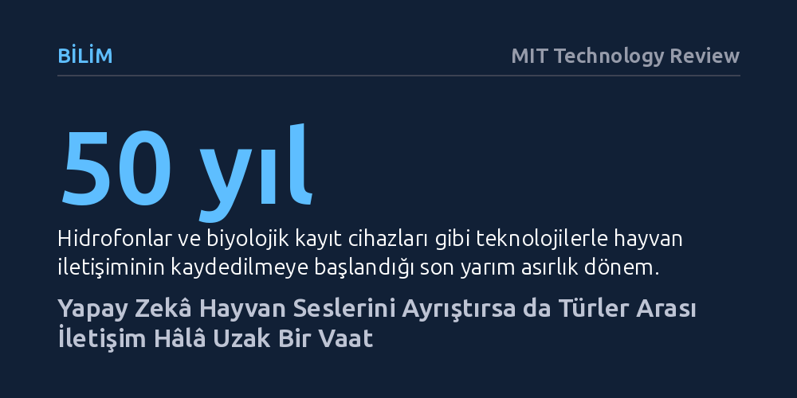

BILIM · MIT Technology Review · 2026-10-22
Yapay zekâ ve biyolojik kayıt cihazları hayvan seslerini ayrıştırmada ilerleme sağlasa da, görsel ve kimyasal bağlamdan yoksun akustik modeller türler arası iletişimi çözmekten henüz çok uzak. Hayvan dillerinin yapay zekâyla çözülebileceği ve iki yönlü iletişim kurulabileceği beklentisi şimdilik yalnızca teorik bir vaat.
Yapay zekânın hayvanlarla konuşmayı mümkün kılacağı yönündeki yaygın beklentiye karşın, hayvan iletişiminin yalnızca sesten ibaret olmadığını ve modellerin bağlamdan kopuk akustik benzerliklerle yanılabileceğini gösteriyor.

İnsan türü, gezegende karmaşık seslerle iletişim kurabilen tek canlı değil. Okyanusların karanlık derinliklerinden ormanların en yüksek dallarına kadar sayısız tür; ıslıklar, ciyaklamalar, iniltiler ve tıkırtılarla birbirine sürekli bir şeyler anlatıyor. Bilim insanları uzun zamandır bu iletişim kodlarını çözmenin, insan dışındaki canlıların zihinsel ve duygusal evrenini anlamak için eşsiz bir pencere açacağına inanıyor. Hayvanlar arası iletişimi kavramak, onların yalnızca içgüdüleriyle hareket eden otomatlar olmadığını, kendi algı ve deneyim dünyalarına sahip canlılar olduğunu idrak etmemizi sağlayabilir.
Fakat bu seslerin ne anlama geldiğini saptamak devasa bir teknik zorluk barındırıyor. Bir hayvanın çıkardığı sesi anlamlandırabilmek için öncelikle o sesin hangi çevresel olay anında kaydedildiğini eksiksiz biçimde eşleştirmek gerekiyor. Örneğin çayır köpekleri, çevrelerine bir çakal yaklaştığında farklı, havada bir şahin belirdiğinde ise bambaşka bir ses dizisiyle alarm veriyor. Karada gözlemlenmesi nispeten kolay olan bu türlerin aksine, okyanusun derinliklerine dalan balinalar ya da yer altında tünel kazan kör fareler gibi canlılarda bu eşleştirmeleri yapmak olağanüstü bir sabır ve çaba gerektiriyor.
Yine de son elli yılda geliştirilen gözlem teknolojileri, biyologların elini ciddi ölçüde güçlendirdi. Okyanus tabanlarına yerleştirilen hassas hidrofonlar sayesinde kambur balinaların kilometrelerce öteye ulaşan şarkıları kaydedilebilirken, yarasaların ya da kuşların sırtına takılan mikroskobik biyolojik kayıt cihazları (biologger) hayvanların uçuş anındaki en tiz seslerini bile kayıt altına alabiliyor. Bu teknolojik sıçrama, bilim insanlarının elinde daha önce hiç olmadığı kadar devasa bir ses arşivi birikmesini sağladı.
Toplanan akustik verilerin büyüklüğü insan kulağının ve klasik istatistik yöntemlerinin analiz kapasitesini aşınca, devreye son on yılın en hızlı gelişen alanı olan yapay zekâ girdi. Makine öğrenimi algoritmaları; karmaşık ses kayıtları içerisindeki belirli çağrıları yakalayabiliyor, üst üste binen seslerin hangi hayvana ait olduğunu ayrıştırabiliyor ve ses dalgalarındaki gizli matematiksel örüntüleri görünür kılabiliyor.
Bu alanda çığır açmayı hedefleyen kâr amacı gütmeyen araştırma kuruluşu Earth Species Project (ESP), geçtiğimiz günlerde makine öğrenimi modellerini kullanarak leş kargalarının ses kayıtlarını inceledi. Geliştirilen sistem, bir karga sürüsü içinden hangi çağrının tam olarak hangi birey tarafından yapıldığını ayırt etmeyi başardı. Bu tür başarılar, araştırmacıların yapay zekâyı yalnızca bir ses ayrıştırma aracı olarak değil, potansiyel bir tercüman olarak da görmesine yol açıyor.
Metin tabanlı büyük dil modellerinin kelimeler arasındaki anlamsal ilişkileri kurmadaki başarısı, biyoakustik alanına da uyarlanıyor. Araştırmacılar; insan dili, müzik ve çok sayıda hayvan türünün sesleriyle ortak biçimde eğitilen NatureLM gibi modellerin, ilerleyen süreçte farklı canlı türlerinin seslerini yorumlayabilecek bir kapasiteye ulaşmasını hedefliyor.
Yapay zekânın sunduğu bu parlak tabloya rağmen, hayvan iletişimini insan diline çevirme vaadi şimdilik teorik bir hipotezden öteye geçebilmiş değil. Bunun en temel nedeni, hayvanların iletişim dünyasının sadece sese indirgenemeyecek kadar çok katmanlı olmasıdır. Doğadaki pek çok tür; seslerin yanı sıra vücut dili, dokunuşlar, kimyasal feromonlar ve anlık görsel işaretlerin bileşiminden oluşan karmaşık bir sinyal bütünü kullanır. Bu sinyallerin önemli bir kısmı ise insanın duyu sınırlarının tamamen dışında kalır.
Daha da kritik olan sorun, insan dillerini çözmemizi sağlayan hiyeroglif tabletlerindeki gibi bir türler arası Rosetta Taşı'na sahip olmayışımızdır. Yapay zekâ bir ses dizisi çıkardığında veya bir kalıp yakaladığında, bu modelin yaptığı çıkarımın gerçekten o hayvanın zihnindeki niyetle uyuşup uyuşmadığını doğrulayabileceğimiz bağımsız bir ölçüt bulunmuyor.
Tel Aviv Üniversitesi'nden nöroekolog Yossi Yovel gibi pek çok uzman, akustik benzerliklere dayalı yapay zekâ modellerinin ciddi yanılgılara açık olduğuna dikkat çekiyor. Yovel, modellerin yalnızca ses frekanslarının benzerliğine odaklanarak gerçekte tamamen farklı bağlam ve anlamlara sahip iki ayrı sesi birbiriyle karıştırması riskinin son derece yüksek olduğunu vurguluyor.
Bugün hayvanlarla karşılıklı iki yönlü bir diyalog kurup kuramayacağımız ya da bunun ne zaman gerçekleşebileceği sorusunun net bir yanıtı yok. Zoolingua kurucusu Con Slobodchikoff, birçok hayvanın insanlarla benzer bir evrimsel yapı paylaştığını ve bu ortak biyolojik mirasın onların ne söylediğini anlamamızı teorik olarak mümkün kıldığını savunuyor. Slobodchikoff'a göre bu çaba, insanların "hayvanların düşünen, kendilerine ait umutları ve hayalleri olan duyarlı canlılar" olduğunu fark etmesine yardımcı olabilir.
Buna karşın bilim camiasının genel duruşu çok daha temkinli. Elimizde gezegenin dört bir yanından toplanmış devasa miktarda hayvan sesi kaydı bulunuyor; ancak bu ham veriyi gerçek bir anlama dönüştürmek, birkaç gelişmiş sinir ağını çalıştırmaktan çok daha derin biyolojik ve felsefi soruları çözmeyi gerektiriyor.
Sonuç olarak yapay zekâ, doğanın ses haritasını çıkarmamızda ve hayvanların akustik dünyasını sınıflandırmamızda bize eşi görülmemiş bir mercek sunuyor. Ancak bu merceği iki yönlü bir iletişim köprüsüne dönüştürmek, teknolojinin şu anki kabiliyetlerinin ve yakın gelecekteki sınırlarının ötesinde duruyor.